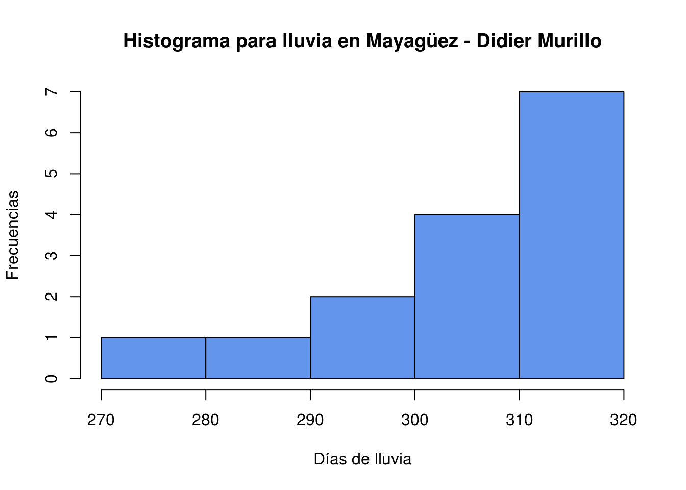

Solución tarea # 3
Las siguientes funciones serán usadas para resolver la tarea
############## Tabla de frecuencia datos discretos#############
tabla_freq_discretas <- function(x){
Obs <- sort(unique(x),F)
Freq_Abs <- as.vector(table(x))
Freq_Relativa <- as.vector(Freq_Abs/length(x))
Freq_Acum <- as.vector(cumsum(Freq_Abs))
Freq_Abs_Acum <- as.vector(Freq_Acum/length(x))
table_freq <- data.frame(Obs,Freq_Abs,Freq_Relativa, Freq_Acum, Freq_Abs_Acum)
table_freq
}
############## Tabla de frecuencia datos continuos#############
tabla_frecuencia <- function(datos) {
k <- nclass.Sturges(datos)
intervalos <- cut(datos, breaks = k)
tabla2 <- as.data.frame(table(intervalos))
tabla2 <- transform(tabla2, Freq_Relativa = prop.table(Freq),Frec_Acum = cumsum(Freq))
tabla2 <- transform(tabla2, Freq_Abs_Acum = cumsum(Freq_Relativa))
midpoints <- function(x, dp=2){
lower <- as.numeric(gsub(',.*','',gsub('\\(|\\[|\\)|\\]','', x)))
upper <- as.numeric(gsub('.*,','',gsub('\\(|\\[|\\)|\\]','', x)))
return(round(lower+(upper-lower)/2, dp))
}
tabla2 <- transform(tabla2, MC = midpoints(intervalos))
tabla2
}Ejercicio 1
- El siguiente código simula datos de un experimento en donde se está probando la efectividad de un nuevo insecticida contra una especie de insecto. Se realizaron 40 repeticiones del experimento y se observaron la cantidad de insectos muertos en cada repetición.
set.seed(123)
insectos_m <- rpois(40,10)
print(tabla_freq_discretas(insectos_m))## Obs Freq_Abs Freq_Relativa Freq_Acum Freq_Abs_Acum
## 1 3 1 0.025 1 0.025
## 2 4 2 0.050 3 0.075
## 3 5 2 0.050 5 0.125
## 4 6 4 0.100 9 0.225
## 5 7 3 0.075 12 0.300
## 6 8 6 0.150 18 0.450
## 7 9 4 0.100 22 0.550
## 8 10 3 0.075 25 0.625
## 9 11 5 0.125 30 0.750
## 10 12 5 0.125 35 0.875
## 11 13 2 0.050 37 0.925
## 12 14 1 0.025 38 0.950
## 13 15 2 0.050 40 1.000Las observaciones son la cantidad de insectos muertos en cada repetición de un total de 40 ensayos o repeticiones del experimento. Según la tabla tenemos por ejemplo que
En seis ensayos murieron de a 8 insectos.
En el 10 % de los ensayos murieron de a 6 y 9 insectos.
En 22 ensayos murieron entre 3 y 9 insectos.
En el 45 % de los ensayos murieron de 9 a 15 insectos.
- Hacer una gráfica
Dotplotpara el número de insectos muertos. El data frame o tabla de datos se llamainsectos_muertosy tiene solo una columnainsectos_mcon el conteo de insectos muertos. Interpretar el gráfico.
insectos_muertos <- data.frame(insectos_m)
library(ggplot2)
ggplot(insectos_muertos , aes(x = insectos_muertos$insectos_m)) +
geom_dotplot(fill = "blue", color = "black") +
ggtitle("Dotplot para el número de insectos muertos - Didier Murillo") + xlab("Número de insectos") + ylab("frecuencia")`stat_bindot()` using `bins = 30`. Pick better value with `binwidth`.
Cada punto azul representa una repetición del experimento, por ejemplo murieron 9 nueve insectos en 5 repeticiones.
Ejercicio 2
Una forma de leer los datos es la siguiente.
## Leer los datos
class_survey <- read.table("/datos/DirectorioR/class_survey.txt",header=TRUE,sep = "\t")
head(class_survey) Sex GPA Religious_Importance Monthly_Parties Drinking_Days
1 Male 2.67 Very Important 1 0
2 Female 2.98 Fairly Important 2 0
3 Female 2.67 Fairly Important 3 2
4 Female 3.60 Not Important 8 8
5 Female 3.76 Fairly Important 6 6
6 Male 3.86 Not Important 5 7
Smoke_Cigarettes SATM SATV Height Weight
1 No 700 700 67 190
2 No 700 500 54 110
3 No 470 470 65 225
4 Yes 710 560 52 135
5 No 600 520 72 128
6 No 610 720 70 188- Seleccione una variable continua y construya una tabla de frecuencias (use la función
tabla_frecuenciaque discutimos durante la clase).
# Seleccioné la variable continua SATM
print(tabla_frecuencia(class_survey$SATM))## intervalos Freq Freq_Relativa Frec_Acum Freq_Abs_Acum MC
## 1 (300,356] 1 0.004524887 1 0.004524887 328.0
## 2 (356,411] 2 0.009049774 3 0.013574661 383.5
## 3 (411,467] 13 0.058823529 16 0.072398190 439.0
## 4 (467,522] 26 0.117647059 42 0.190045249 494.5
## 5 (522,578] 43 0.194570136 85 0.384615385 550.0
## 6 (578,633] 55 0.248868778 140 0.633484163 605.5
## 7 (633,689] 49 0.221719457 189 0.855203620 661.0
## 8 (689,744] 23 0.104072398 212 0.959276018 716.5
## 9 (744,800] 9 0.040723982 221 1.000000000 772.0- Interprete un valor de cada columna en la tabla de frecuencias.
Hay 55 estudiantes con puntajes en SATM entre 578 y 633
El 10% de los estudiantes tienen puntajes de SATM entre 689 y 744
Solo nueve estudiantes tienen puntajes de SATM mayores a 744
3/ % de los estudiantes tiene puntajes de SATM superiores a 633
- Use
Ry/oRStudioy la funciónhist()o el paqueteggplot2para crear el histograma de la variable que fue seleccionada. La gráfica debe tener título y nombre en los ejes x-y.
hist(class_survey$SATM,main = "Histograma para SATM - Didier Murillo",col = "seagreen",xlab = "SATM",ylab = "Número de estudiantes")Claramente se ve que el histograma para SATM es sesgado a la izquierda. Esto quiere decir que la mayoría de estudiantes tienen puntajes altos para la prueba SATM.
Problema 3.
- Seleccione una variable cualitativa (Categórica) y haga un gráfico de barras. La gráfica debe tener título y nombre en los ejes x-y. Interprete el gráfico.
library(ggplot2)
ggplot(class_survey, aes(fill=class_survey$Religious_Importance, x=class_survey$Religious_Importance)) +
geom_bar(position="dodge") + ggtitle("Gráfico de barras para importancia de la religión - Didier Murillo") +
xlab("Importancia de la Religión") + ylab("Número de estudiantes")Podemos observar que a la mayoría de estudiantes en la muestra les parece muy importante la religión.
- Haga un gráfico similar al siguiente plot de barras por grupos (Es decir usar las mismas variables). El título debe llevar su nombre. Interprete el gráfico.
library(ggplot2)
ggplot(class_survey, aes(fill=class_survey$Smoke_Cigarettes, x=class_survey$Religious_Importance)) +
geom_bar(position="dodge") + ggtitle("Gráfico de barras por grupos - Didier Murillo") +
xlab("Importancia de la Religión") + ylab("Número de estudiantes")Se observa, que cuando no es importante la religión, aumenta la proporción de estudiantes que fuman.
- Haga un gráfico circular con la variable
Religious_Importance. Interprete el gráfico.
table(class_survey$Religious_Importance)##
## Fairly Important Not Important Very Important
## 97 61 63Importance <- c("Fairly Important "," Not Important", "Very Important ")
num_Importance <- c(97,61,63 )
pct <- round(num_Importance/sum(num_Importance)*100)
Importance <- paste(Importance, pct) # add percents to labels
Importance <- paste(Importance,"%",sep="") # ad % to labels
pie(num_Importance,labels = Importance, col=rainbow(length(Importance)),
main="Gráfico de sectores para importancia de la religión - Didier Murillo")Problema 4.
Los siguientes datos corresponden al número de días que ha llovido en Mayagüez durante los últimos 15 años.
311 293 285 306 311 309 313 309 320 311 319 307 320 273 297
- Use
Ry/oRStudioy la funciónstem()para crear el gráfico de tallos y hojas.
s <- c(311, 293, 285, 306, 311, 309, 313, 309, 320, 311, 319, 307, 320, 273, 297)
stem(s,1)##
## The decimal point is 1 digit(s) to the right of the |
##
## 27 | 3
## 28 | 5
## 29 | 37
## 30 | 6799
## 31 | 11139
## 32 | 00El gráfico de tallos y hojas es sesgado a izquierda (No es una sorpresa!). Eso quiere decir que en Mayagüez llueve mucho.
- Use
Ry/oRStudiopara hacer un histograma de los datos. Compare su histograma con el gráfico de tallos y hojas.
hist(s,main = "Histograma para lluvia en Mayagüez - Didier Murillo",col = "cornflowerblue",xlab = "Días de lluvia",ylab = "Frecuencias")
El histograma es muy similar al gráfico de tallos y hojas. También encontramos el sesgo de la distribución de la lluvia a izquierda.